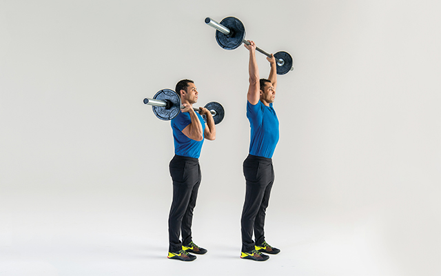

The overhead press is revered for its brute-strength production and renowned for its seeming simplicity. Just press a barbell, or one of its cousin 'bells, from the top of your chest to its overhead, arms-extended destination. That's the lift in a nutshell, and the juiciest fruits of your overhead labor are unmatched shoulder and upper-back development. Of course, the brute strength developed by the standing overhead pressing reaches far beyond the shoulders and arms. Full-body engagement builds full-body strength. The standing overhead press also builds the abdominal wall, strengthens the hips, and builds stability through the legs. But we can't forget the main targets: the shoulders, upper back, and triceps. Search the world over and you won't find another exercise that dramatically develops the shoulders and upper back like the overhead press. Even though the overhead press is simple to describe, it's actually a relatively technical lift that should be approached intelligently, practiced, and mastered. Here's how to get it done.
